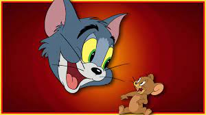

Tom and Jerry is an American animated media franchise and series of comedy short
films created in 1940 by William Hanna and Joseph Barbera. Best known for its 161
theatrical short films by Metro-Goldwyn-Mayer, the series centers on the rivalry
between the titular characters of a cat named Tom and a mouse named Jerry. Many
shorts also feature several recurring characters.
In its original run, Hanna and Barbera produced 114 Tom and Jerry shorts for MGM
from 1940 to 1958.[1] During this time, they won seven Academy Awards for Best
Animated Short Film, tying for first place with Walt Disney's Silly Symphonies
with the most awards in the category. After the MGM cartoon studio closed in 1957,
MGM revived the series with Gene Deitch directing an additional 13 Tom and Jerry
shorts for Rembrandt Films from 1961 to 1962. Tom and Jerry became the
highest-grossing animated short film series of that time, overtaking Looney
Tunes. Chuck Jones produced another 34 shorts with Sib Tower 12 Productions
between 1963 and 1967. Five more shorts have been produced since 2001, making
a total of 166 shorts.
A number of spin-offs have been made, including the television series The Tom and
Jerry Show (1975), The Tom and Jerry Comedy Show (1980–1982), Tom & Jerry Kids (1990–1993),
Tom and Jerry Tales (2006–2008), and The Tom and Jerry Show (2014–2021). In 1992, the
first feature-length film based on the series, Tom and Jerry: The Movie, was released
. 13 direct-to-video films have been produced since 2002. In 2021, a a
live-action/animated hybrid film was released. In 2019, a musical adaptation
of the series, titled Tom and Jerry: Purr-Chance to Dream, debuted in Japan,
in advance of Tom and Jerry's 80th anniversary..